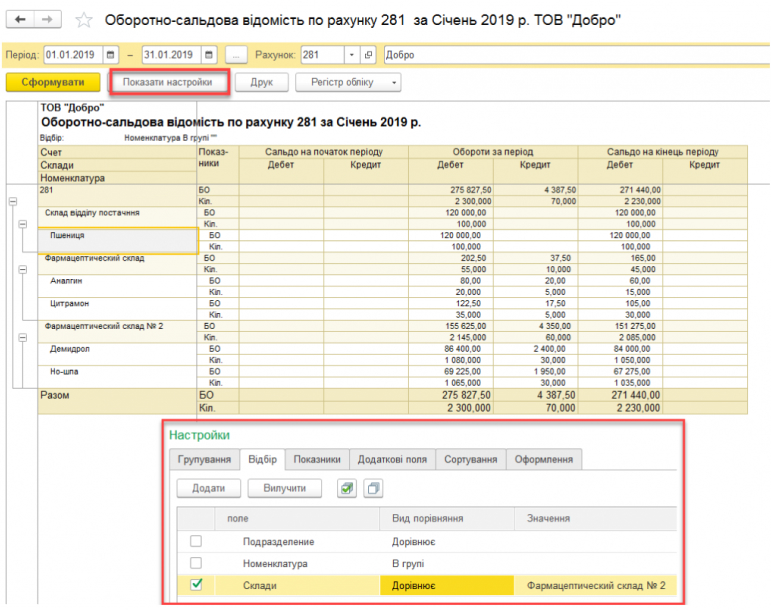
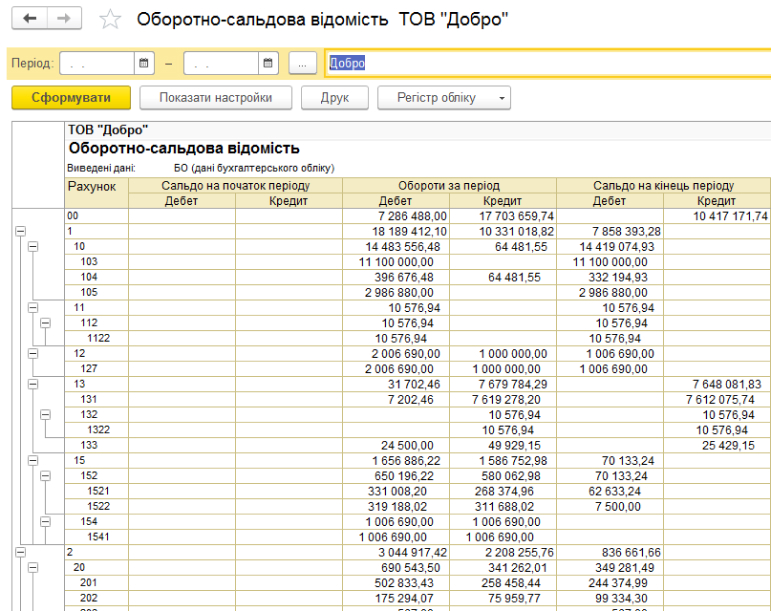

Про програму
BAS ERP - програмний комплекс, який дозволяє організувати єдину інформаційну систему, для управління різними аспектами діяльності підприємства.
Програми, які надають можливість автоматизувати всі бізнес-процеси в межах єдиної інформаційної бази, є основою для створення ERP-систем.
Програма призначена для автоматизації діяльності великих підприємств з технічно складним виробництвом і великим кількістю робочих місць. В сучасних Ринковий умовах немає жодного підприємства, яке не використало б у своїй роботі засоби автоматизації.
Прикладне рішення BAS ERP - це новий продукт, який орієнтований на великі підприємства і націлений на автоматизацію завдань управління підприємством, процесами, персоналом.

-
Товар додано
в обране

-
Товар додано для
порівняння

- Варіанти поставки
- Підтримка ІТС

Чим відрізняється ІТС Техно і ІТС Проф?
Договір 1С: ІТС Україна рівня ПРОФ забезпечує користувачам програм "1С: Підприємство" максимальну кількість інформації і послуг, що надаються фірмою "1С" і партнерами фірми "1С", а також включає в себе професійну інформаційну систему ІТС ПРОФ Україна і додаткові сервіси (зокрема сервіс здачі електронної звітності 1С: Звіт).
Договір 1С: ІТС Україна рівня ТЕХНО включає в себе технологічну інформаційну систему ІТС Україна Техно і забезпечує користувачам програм "1С: Підприємство". Нижче наведено порівняльну таблицю наповнення ІТС Україна рівнів ТЕХНО і ПРОФ. Користувачі ІТС Україна ТЕХНО мають право докупити всі інші сервіси за додаткову плату (крім доступу до інформаційної системи).
| Договір рівня Техно | Договір рівня Проф | ||
|---|---|---|---|
| Надаються фірмою "1С": | |||
| Надаються фірмою "1С": | Оновлення програм і конфігурацій "1С: Підприємство" | + | + |
| Інформаційна система: | |||
| Інформаційна система: | Методичні матеріали по налаштуванню і ефективному використанню програм "1С" | - | + |
| Довідник "Коментарі до нормативних документів і роз'яснень" | + | - | |
| Довідник "Бухгалтеру на замітку" | + | + | |
| Надаються фірмою "1С": | |||
| Надаються фірмою "1С": | Оновлення програм і конфігурацій "1С: Підприємство" | + | + |
| Методичні матеріали по налаштуванню і ефективному використанню програм "1С" | - | + | |
| Довідник "Коментарі до нормативних документів і роз'яснень" | + | - | |
Наш фахівець докладно розповість про цей інструмент і продемонструє його переваги.
Підсистеми BAS ERP
Рішення BAS ERP легко інтегрується з CBT SCM. У комплексі обидві системи повністю закривають бухгалтерський і управлінський контур, а також надають всі необхідні інструменти планування і прогнозування.
Програмне рішення BAS ERP допомагає керувати аспектами управлінської діяльності підприємства і включає в себе наступні підсистеми:
- Бухгалтерський і податковий облік;
- Взаєморозрахунки з клієнтами;
- Склад і доставка;
- Казначейство;
- Фінансовий облік;
- МСФЗ;
- Бюджетування;
- Управління виробництвом;
- Управління ремонтами;
- Управління закупівлями;
- Управління персоналом і зарплата;
- Управління продажами;
- Контроль і управління;
- Електронне обладнання;
- Обмін з сайтами;
- Работа в web.
Бухгалтерський
і податковий облік
У підсистему включений бухгалтерський і податковий облік, який в основному об'єднують загальною назвою регламентованого обліку (обов'язкові звіти), він строго визначений національними стандартами і законодавством України.
У конфігурацію включені стандартні звіти, що дозволяють проводити аналіз по залишкам, оборотам рахунків і проводках в різних розрізах. У функціонал передбачена можливість угруповання, відбору і сортування інформації, яка буде виведена в звіт, на основі специфіки діяльності підприємства. Передбачена можливість вивантаження звітів в ел. вигляді.
 Взаєморозрахунки
з клієнтами
У підсистемі передбачено опціональний функціонал:
- Використання типових і індивідуальних правил роботи з клієнтами (оферт). Однак можна реєструвати угоди і без оферт;
- Використання декількох варіантів планування оплат від клієнтів;
- Автоматизація передпродажної роботи з клієнтами за допомогою комерційних пропозицій;
- Використання ордерної схеми документообігу продажів;
- Використання процесів узгодження замовлень, статусів і станів замовлень;
- Планування і реєстрація повернень товарів від клієнтів;
- Ведення претензійної роботи з клієнтами;
- Використання актів на передачу прав і актів про розбіжності після реалізації продукції / послуги;
- Використання механізмів реалізації цін номенклатури, в тому числі з використанням даних інформаційної бази і цін постачальників.
Потенційний економічний ефект від використання функціоналу підсистеми:
- Збільшення обсягу реалізації товарів і послуг;
- Збільшення обороту коштів, завдяки контролю дебіторської заборгованості;
- Скорочення термінів виконання замовлень;
- Збільшення точності планування індивідуальних замовлень завдяки відокремленому обліку замовлень;
- Оптимізація ціноутворення і підвищення привабливості для клієнтів, зокрема завдяки використанню інтерфейсу самообслуговування;
- Зниження трудовитрат на підготовку документів і збільшення продуктивності праці персоналу;
- Підвищення якості та прозорості роботи персоналу завдяки можливості аналізувати фінансовий результат в розрізі підрозділів і менеджерів;
- Уніфікація роботи персоналу і зниження трудовитрат завдяки механізму бізнес-процесів, типових оферт і взаємодій;
- Підвищення рейтингу підприємства з точки зору потенційних інвесторів і партнерів завдяки використанню практики управління, яка б відповідала міжнародним стандартам.
Склад і доставка
Основним завданням даної підсистеми є автоматизація складських операцій підприємства, в тому числі технологічних процесів складу і операцій доставки, а саме:
- Планування і контроль виконання складських операцій;
- Оптимізація технологічних процесів складу, де використовується адресне зберігання, зокрема при інвентаризації;
- Планування і контроль виконання процесів доставки.
Потенційний економічний ефект від використання функціоналу підсистеми:
- Зниження логістичних витрат завдяки оптимізації роботи складських приміщень і планування доставки;
- Зниження втрат від псування складських запасів;
- Зниження трудовитрат по підготовці документів та збільшення продуктивності праці персоналу;
Функціонал підсистеми надає можливість автоматизувати складські операції в найпростішому варіанті, без застосування ордерної схеми документообігу, із застосуванням ордерної схеми документообігу і з застосуванням адресного зберігання. Варіант використовуваного документообігу вказується для кожного складу.
Система управління
складом WMS
Функціонал системи дозволяє:
- вести кількісний облік товарів на складах і в приміщеннях;
- вести облік товарів на рівні складських осередків для адресного зберігання товарів;
- розділяти складські зони на робочі ділянки;
- поділ складу на зони зберігання різних груп товарів (м'ясо, яйця, одяг, техніка і т.д.);
- оптимальний підбір розміру осередку відповідно до габаритів товару.
Казначейство
Завдання підсистеми - ефективне управління грошовими коштами, які є основним джерелом для формування виробничих ресурсів підприємства, необхідних для виконання стратегічних планів.
Підсистема дозволяє автоматизувати наступні функції:
- Планування руху грошових коштів;
- Облік руху готівкових та безготівкових грошових коштів, в тому числі в різних валютах;
- Контроль виконання графіка платежів і його зміна, якщо є необхідність;
- Проводити взаєморозрахунки з підзвітними особами.
Потенційний економічний ефект від використання функціоналу підсистеми:
- Скорочення часу перевірки реєстрів платежів завдяки використанню платіжного календаря;
- Підвищення ефективності використання грошових коштів;
- Зниження операційних та управлінських витрат;
- Зниження трудовитрат на підготовку документів і збільшення продуктивності праці персоналу.
Фінансовий облік
Підсистема управління фінансами дозволяє:
- Реєструвати / розподіляти доходи і витрати за напрямками діяльності;
- Реєструвати / розподіляти доходи і витрати за напрямками діяльності;
- Враховувати інші активи і пасиви - регулювати реєстрацію в інформаційній базі рухів за активами і пасивами, не пов'язаних з основною діяльністю;
Формувати управлінський баланс - формувати управлінський баланс і звіт про прибутки і збитки заздалегідь визначеної структури за алгоритмом заповнення, яку користувач не може змінити. Цей функціонал можна використовувати тільки за умови, що не використовується функціонал підсистеми Міжнародний фінансовий облік.
МСФО
Міжнародний фінансовий облік (МСФЗ) допомагає вирішувати наступні завдання:
- відображення документів оперативного обліку в фінансовому обліку;
-
підготовка звітності:
- відповідно до принципів міжнародних стандартів фінансової звітності, включаючи можливість настройки додаткових звітів для перевірки та аналізу облікових даних;
- за правилами управлінського обліку, побудованому на основі МСФЗ;
- настройка періодичності отримання звітності (місяць, квартал, півріччя, рік), а
також гнучкість в налаштуванні наступних звітних форм:
- Звіт про фінансовий стан;
- Звіт про сукупний дохід;
- Звіт про зміни в капіталі;
- Звіт про рух грошових коштів.
- скорочення трудовитрат на отримання звітності в порівнянні з ручною зведенням даних штатним фахівцем або аутсорсинговим фахівцем
Використання МСФЗ є не обов'язковим до використання і включається окремо по потребі підприємства.
У даній підсистемі, в призначеному для користувача режимі, встановлюються валюти, необхідні для використання, налаштовуються умови, за якими вестиметься облік, а саме з яких джерел будуть транслюватися дані в МСФЗ:
- Формування проводок за даними оперативного обліку;
- Формування проводок за даними регламентованого обліку;
- Незалежного обліку необоротних активів для міжнародного обліку.
Бюджетування
Підсистема бюджетування призначена для:
- Планування фінансових показників господарської діяльності, зокрема планування потоків грошових коштів, обсягів продажів, покупок, виробництва, витрат на забезпечення діяльності;
- Формування фінансової звітності за фактичними і плановими даними.
Мета підсистеми - це організація процесів управління даними, які надають можливість отримати чітку картину як поточного, так і майбутнього фінансового стану підприємства за обраними показниками (прибутку, залишків грошових коштів і т.п.). Інструментом організації таких процесів є бюджетні форми.
Підсистема бюджетування надає можливість:
- Планувати фінансовий стан підприємства на зазначений період;
- Планувати грошові потоки;
- Складати основні бюджети і фінансові звіти про фактичний стан підприємства:
- Бюджет доходів і витрат;
- Бюджет руху грошових коштів
- Прогнозний баланс;
- Складати операційні та функціональні бюджети, і зведений фінансовий план;
- Моделювати майбутню діяльність з використанням різних сценаріїв роботи, порівнювати дані сценаріїв між собою;
- Формувати план-фактний аналіз відхилень в розрізі обраних аналітик;
- Управляти процесами формування і затвердження бюджетів, а також аналізувати результати за період;
Процес бюджетування регламентується тільки положенням про бюджетування, яке розробляється і затверджується на підприємстві.
У складі Положення про бюджетування затверджуються:
- Система показників;
- Структура бюджетів (бюджетна модель);
- Бюджетний регламент (планування, затвердження та контроль виконання).
Основною перевагою підсистеми є відсутність певної моделі і гнучкість настройки системи.
Бюджетування
У підсистемі управління виробництвом, реалізована дворівнева система управління:
- На межцеховом рівні (рівень головного диспетчера) здійснюється контроль за графіком виробництва на рівні підрозділів. Це укрупнений контроль за часом і ресурсами;
- На внутрішньоцеховому рівні (рівень локального диспетчера) здійснюються управління процесами виконання графіка виробництва в окремому підрозділі.
Функціонал підсистеми підтримує:
- Широкий контроль забезпечення всіма ресурсами, тобто не тільки на рівні доступності робочих центрів, а й в рамках забезпечення матеріальними ресурсами;
- Діагностика і можливість легко перепланувати графіки виробництва;
- Можливість прогнозування замовлень на виробництво, оцінка виконання замовлень, завантаження устаткування, завантаження персоналу тощо.
Управління
ремонтами
В рамках підсистеми передбачені:
- Реєстрація та збереження інформації щодо об'єктів експлуатації, параметрів їх експлуатації, параметрів їхнього періодичного обслуговування і напрацювань;
- Реєстрація інформації, щодо дефектів і пошкоджень у роботі об'єктів експлуатації, використання робіт для усунення поломок;
- Фіксація операцій пов'язаних з життєвим циклом устаткування (прийняття до обліку, модернізації, і тд.)
Управління закупівлями
У підсистемі передбачено опціональний функціонал:
- Використання ордерної схеми документообігу покупок;
- Використання процесів узгодження замовлень, статусів і станів замовлень;
- Використання актів прийому товарів і актів про розбіжності, виявлені при оформленні надходження товарів;
- Реєстрація розбіжностей при прийомі товарів і відображення цих розбіжностей в обліку;
- Використання декількох механізмів реєстрації цін постачальників, зокрема завантаження прайс-листів постачальників з зовнішніх файлів;
- Зберігання найменувань номенклатури, які використовують постачальники (номенклатура постачальників), і використання номенклатури постачальників в електронний документообіг, зокрема в разі завантаження замовлень і прайс-листів;
- Оформлення митних декларацій на імпорт;
- Комісійної торгівлі з боку комісіонера;
- Обліку поворотної тари в процесах покупки.
Облік взаєморозрахунків з постачальниками можна вести в розрізі договорів, замовлень і накладних.
У документах оплати можна розподіляти аванси по об'єктах розрахунків. Регламентна процедура розподіляє розрахунки за накладними по застосуванню методу FIFO.
Потенційний економічний ефект від використання функціоналу підсистеми:
- Оптимізація витрат на купівельну діяльність підприємства;
- Скорочення термінів виконання замовлень;
- Збільшення точності планування індивідуальних замовлень завдяки відокремленому обліку замовлень;
- Зниження собівартості запасів;
- Зниження трудовитрат на підготовку документів і збільшення продуктивності праці персоналу;
- Скорочення операційних витрат завдяки мінімізації штрафних санкцій з боку постачальників;
- Зниження втрат від псування і втрат зворотної тари.
Управління
персоналом і зарплата
Підсистема призначена для ведення кадрового обліку та інформаційних даних про всіх працівників.
У програму вбудований функціонал підбору, навчання та оцінки кваліфікації співробітників, управління робочим часом.
Для розраховувачів передбачені безліч видів нарахувань - оклади, відрядні оплати праці, виплата матеріальної допомоги, доходи в натуральній формі.
Нарахування та утримання податків згідно з чинним законодавством України. Передбачені регламентні звіти для здачі в контролюючі органи.
Управління продажами
У підсистемі передбачено опціональний функціонал:
- використання типових і індивідуальних правил роботи з клієнтом;
- використання декількох варіантів оплат від клієнта;
- автоматизація передпродажної роботи з клієнтами, за допомогою комерційних пропозицій;
- використання ордерної схеми документообігу продажів;
- використання процесів узгодження замовлень, статусів і станів замовлень;
- планування та реєстрація повернень товарів від клієнтів;
- використання актів на передачу прав і актів розбіжностей після реалізації;
- використання механізмів реєстрації цін номенклатури, з використанням даних інформаційної бази і цін постачальників;
- операції комісійної і роздрібної торгівлі;
- анкетування;
- створення шаблонів для e-mail розсилок і повідомлень;
- формування знижок;
- настройка бонусної програми;
- аналіз і обробка претензій;
- CRM-система;